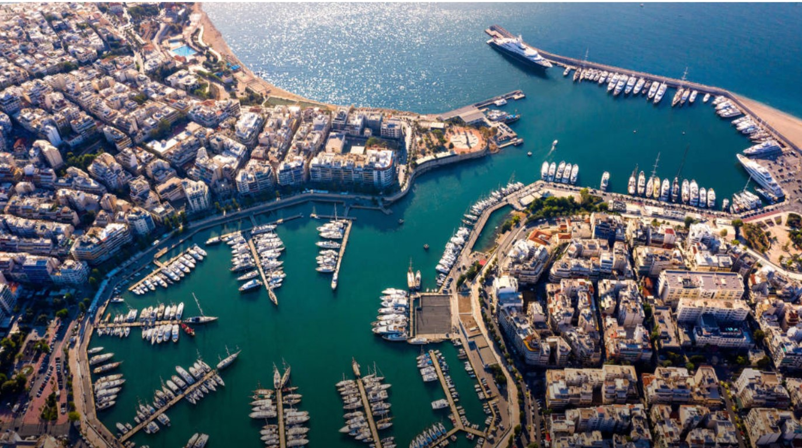

Η Μαρίνα Ζέας βρίσκεται στον Πειραιά, στην ανατολική ακτή της χερσονήσου της Πειραϊκής. Η περιοχή της θάλασσας αποτελείται από δύο λιμάνια, το Πασαλιμάνι και τη Φρεατίδα. Σε σχέση με άλλες μαρίνες, η κίνηση εδώ είναι πιο αυξημένη χάρη στα πολλά καταστήματα μέσα στη μαρίνα και τον γύρω χώρο. Κατά την αρχαιότητα υπήρξε ο μεγαλύτερος πολεμικός λιμένας της Αθήνας. Η περιοχή προ της πλατείας Κανάρη μπορούσε να φιλοξενεί Διπλά πλοία ενώ υπολογίζεται πως σχεδόν όλος ο στόλος της Αθήνας φυλασσόταν εκεί. Η Μαρίνα Ζέας είναι εκτός των άλλων, ένα σημείο ιδανικό για περιπατητική διαδρομή , καθώς στην πορεία του ο επισκέπτης έχει την δυνατότητα να απόλαυση την θέα της θάλασσας και του ουρανού. Η πολυσύχναστη μαρίνα προσφέρει πολλαπλές γευστικές επιλογές και διεθνείς κουζίνες. Εδώ έχετε την δυνατότητα να δοκιμάσετε Ιταλικές, Μεξικάνικες, Ασιατικές και Αμερικάνικες γεύσεις.
